판금제관기능장 (2002-07-21 기출문제)
1과목: 임의 구분
1. 판재에 인장력을 주어 고르게 변형을 바로 잡는 기계로 대량생산에는 접합하지 않고 교정할 재료의 양끝을 잡는 클리퍼가(clipper)있는 기계는 ?
- 변형교정 프레스(straightening press)
- 롤 교정기(roll leveller)
- 스트레처 교정기(stretcher leveller)
- 서큘러 시어(circular shear)
(정답률: 54%)

2. ㄱ형강이나 T형강을 굽히는데 주로 사용되는 기계는 ?
- 파이프 벤더
- 시밍 머신
- 앵글 벤더
- 폴딩 머신
(정답률: 92%)
3. 전동기에 의해 회전하는 플라이 휘일의 회전력이 클러치를 통하여 편심축에 전달되어 고정된 아랫날에 대해 윗날이 상,하로 움직이면서 판재를 자르는 전단기는 ?
- 갱 슬리터(gang slitter)
- 로울러 시어(roller shear)
- 직각 전단기(squear shear)
- 니블링 시어(nibbling shear)
(정답률: 69%)
4. 제관 공작물을 고정할 때 사용하는 쐐기는 몇 도 이내로 제작 되어야 스스로 빠져나오지 않는가 ?
- 17°
- 24°
- 27°
- 32°
(정답률: 54%)
5. 해머의 한쪽은 판재의 둥근부 타출에 쓰이며 다른 쪽은 평판재의 타출에 쓰이는 해머는 ?
- 세팅해머
- 볼핀해머
- 연질해머
- 레이징해머
(정답률: 53%)
6. 직각으로 굽힘가공시 플랜지의 최소높이는 굽힘 반지름 R = 0인 경우에는 얼마까지 가공할 수 있는가? (t:두께)
- 1.0t
- 1.5t
- 2.0t
- 2.5t
(정답률: 42%)
7. 그림과 같은 제품을 두께 4mm의 강판을 이용하여 제작하려고 한다. 중립선이 판의 중심부에 있다고 가정하면 필요한 소재의 길이는 몇 mm인가?
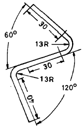
- 127
- 137
- 147
- 157
(정답률: 43%)
8. 형강 굽힘 작업시 굽힘 반지름이 작을 때에는 몇 ℃로 가열한 다음 해머로 때려 굽히는가?
- 350 - 450℃
- 500 - 600℃
- 800 - 1000℃
- 1400 - 1530℃
(정답률: 64%)
9. 파일럿(pilot)의 기능을 가장 잘 설명한 것은?
- 다이블록의 강도를 보완하여 준다.
- 가느다란 펀치를 잘 보호하여 준다.
- 가공한 구멍에 삽입하여 위치를 결정하여 준다.
- 펀치로부터 재료를 벗겨준다.
(정답률: 77%)
10. 그림과 같은 구조물 리벳이음에서 7000 N의 하중이 작용할 때 완성된 리벳의 지름은 몇 mm 정도로 하면 되는가? (단, 철판의 인장강도 σt = 6 N/mm2 이고 리벳은 전단되지 않는다고 가정한다.)
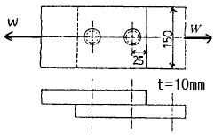
- 23
- 28
- 34
- 38
(정답률: 56%)
11. 납땜 작업에서 연납용 용제로 주로 사용되는 것은 ?
- 염화칼륨(KCI)
- 산화제일구리(Cu2O)
- 붕사(Na2B4O7)
- 염화아연(ZnCI2)
(정답률: 67%)
12. 그림과 같이 앵글에 드릴 가공을 하고자 한다. 이때 앵글의 총길이는 얼마인가 ?
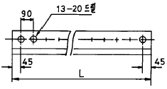
- 2600
- 1800
- 1260
- 1170
(정답률: 77%)
13. 패킹,박판,형강등 얇은 물체의 단면 표시 방법으로 맞는 것은 ?
- 1개의 굵은 실선
- 1개의 가는 실선
- 은선
- 파선
(정답률: 알수없음)
14. 다음 3각법의 정면도와 평면도를 보고 우측면도로 옳은 것은 ?
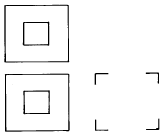
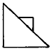
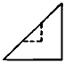
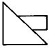
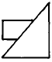
(정답률: 75%)
15. 그림과 같이 정사각뿔의 중심에 곧바로 서 있는 원통의 상관체에서 상관선이 올바르게 표시된 것은 ?
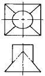
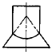
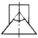
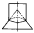
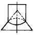
(정답률: 67%)
16. 다음중 금속재료의 기계적 성질이 아닌 것은 ?
- 인성
- 경도
- 열팽창 계수
- 탄성계수
(정답률: 72%)
17. 오스테나이트계 스테인리스강에 대한 설명으로 틀린것은?
- KS 기호로는 STS 304이다.
- 자성체이다.
- Cr 18%, Ni 8%의 합금이다.
- 소성 가공성이 양호하다.
(정답률: 72%)
18. 냉간가공과 열간가공의 구분 온도는 ?
- 응고 온도
- 담금질 온도
- 재결정 온도
- 연소 온도
(정답률: 82%)
19. 서브제로(Sub-zero) 처리(深冷處理)의 목적은?
- 자경강에 인성을 부여하기 위함
- 230℃의 일욕에서 항온 담금질하여 베이나이트(Bainite) 조직을 얻기 위함
- 담금질 후 시효변형을 일으키지 않게 잔류 오스테나이트(Austenite)를 제거하기 위함
- 급열, 급냉시 온도 이력 현상을 관찰하기 위함
(정답률: 94%)
20. 다음 중 관을 직선으로 연결할 때 사용하는 것으로 옳지 않은 것은 ?
- 니플(nipple)
- 벤드(bend)
- 부싱(bushing)
- 플랜지(flange)
(정답률: 85%)
2과목: 임의 구분
21. 변태점 이상으로 가열한 오스테나이트 상태의 강을 급랭하여 마텐자이트로 변태시켜 강을 경화시키는 열처리는?
- quenching
- annealing
- normalizing
- tempering
(정답률: 58%)
22. 다음은 침탄법과 질화법의 성질을 비교한 것이다. 침탄법에 속하는 것은 ?
- 표면경화 처리후 열처리가 필요없다.
- 표면경화 처리후 수정이 불가능하다.
- 표면경화 처리후 경화층이 여리다.
- 표면경화 처리를 짧은시간에 할 수 있다.
(정답률: 36%)
23. 강재의 화학 조성을 변화시키지 않고 표면을 경화시키는 방법은?
- 질화법
- 시안화법
- 숏 피닝
- 금속침투법
(정답률: 65%)
24. 담금질 조직 중 경도와 강도 순으로 표시한 것은?
- 마텐자이트>트루스타이트>소르바이트>오스테나이트
- 트루스타이트>소르바이트>오스테나이트>마텐자이트
- 트루스타이트>마텐자이트>소르바이트>오스테나이트
- 소르바이트>오스테나이트>마텐자이트>트루스타이트
(정답률: 93%)
25. 보일러용 압연 강재를 열간가공하여 드럼으로 만들려고 한다. 이때 적당한 가열온도는 몇 ℃인가 ?
- 200 - 300
- 500 - 550
- 900 - 950
- 1200 - 1250
(정답률: 70%)
26. 일반적으로 판금용 가위 날의 표준 각도에 제일 가까운 것은 ?
- 12°
- 30°
- 45°
- 65°
(정답률: 82%)
27. 원판의 소재에서 뽑힌 부분이 스크랩이 되고 남은 부분이 제품이 되는 작업은 ?
- 블랭킹(blanking)
- 전단(shearing)
- 펀칭(punching)
- 트리밍(trimming)
(정답률: 55%)
28. 스프링 백 현상에 대한 설명 중 옳지 않은 것은?
- 같은 두께에서 굽힘 반지름이 클수록 스프링백의 양은 커진다.
- 같은 굽힘 반지름에서 판 두께가 얇을수록 스프링백의 양은 커진다.
- 스프링 백을 방지하려면 주어진 일감의 각도보다 공구의 각도를 크게 하는 것이 좋다.
- 탄성한도가 높을수록 스프링백의 양은 커진다.
(정답률: 40%)
29. 판재를 원통형 용기로 드로잉 가공 하였을 때 보기와 같이 용기의 끝부분에 불규칙하게 늘어난 부분(Lug)이 발생하는 경우가 있다. 그 이유로서 옳은 것은?
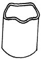
- 불순물이 지나치게 많으므로
- 드오잉 속도가 지나치게 빠르므로
- 드로잉 형의 상형보다 하형이 작을 경우
- 압연판은 압연방향과 그 직각방향에 대한 신율이 각기 다르므로
(정답률: 59%)
30. 지름 100mm의 소재를 드로잉하여 지름 70mm의 원통을 만들었다. 이 때 드로잉률은 얼마이며, 또 이 70mm지름의 용기를 재드로잉률 0.8을 써서 재드로잉하면 재드로잉 후의 용기 지름은 얼마인가 ?
- 드로잉률 0.7, 용기 지름 56mm
- 드로잉률 1.4, 용기 지름 50mm
- 드로잉률 0.7, 용기 지름 49mm
- 드로잉률 1.4, 용기 지름 70mm
(정답률: 70%)
31. 다음 중 압축가공의 종류로만 짝지어진 것은?
- 블랭킹, 셰이빙, 벌징
- 사이징, 압출가공, 펀칭
- 엠보싱, 스웨이징, 코이닝
- 커핑, 브로우칭, 트리밍
(정답률: 59%)
32. 다음 판금가공 중 압축가공이 아닌 것은?
- 압인가공(coining)
- 엠보싱(embossing)
- 스웨이징(swaging)
- 셰이빙(shaving)
(정답률: 54%)
33. 1줄 겹치기 리벳이음에서 전단하중 400 N,리벳지름 13mm일때 전단응력은 몇 N/mm2인가?
- 0.75
- 2.1
- 3.01
- 9.8
(정답률: 54%)
34. 리벳이음의 검사에서 틀린 것은?
- 검사용 해머의 무게는 500g 정도의 것을 사용한다.
- 리벳과 판재와의 각도가 45~60° 방향으로 때려본다.
- 리벳이 잘된 것은 해머가 반발한다.
- 해머를 때렸을 때 탁한 소리가 나면 잘못된 것이다.
(정답률: 54%)
35. 리벳 머리를 해머로 두둘겨 대충 모양을 만든후 이것을 대고 다듬질 하는 공구는 ?
- 드리프트(drift)
- 클램프(clamp)
- 받침대(dally)
- 스냅(snap)
(정답률: 20%)
36. 불활성가스 텅스텐 아크 용접에서 토륨 텅스텐 봉을 사용하는 이유가 아닌 것은?
- 전류용량을 크게 할 수 있다.
- 저전압에서 아크발생이 용이하다.
- 전극의 소모가 적다.
- 전극 가공이 용이하다.
(정답률: 63%)
37. 용접재료(모재)를 적당한 거리에 놓고 서로 서서히 접근시키면서 대전류를 통해 모재 사이에서 생기는 스파크 열에 의하여 모재가 가열되었을 때 강한 압력으로 압접하는 용접법은?
- 퍼커션 용접
- 프로젝션 용접
- 플래쉬 버트 용접
- 업셋 버트 용접
(정답률: 54%)
38. 연강용 피복아크 용접봉 중 일미나이트계 용접봉은?
- E4301
- E4303
- E4311
- E4313
(정답률: 67%)
39. 가스 용접에서 판두께에 적당한 용접봉의 지름(Ｄ)과 모재의 두께 (ｔ)와는 어떠한 관계를 가지고 있는가?
- D = t/2
- D = (t/2) +1
- D = (t/2) -1
- D = (t/2) +2
(정답률: 50%)
40. KS제도에서 가는 실선으로 나타내지 않는 것은 ?
- 치수 보조선
- 지시선
- 기준선
- 회전 단면선
(정답률: 60%)
3과목: 임의 구분
41. 그림에서 A와 C의 치수가 바르게 된 것은 ?
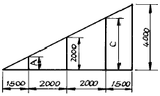
- A 857, C 3142
- A 750, C 2750
- A 832, C 2942
- A 762, C 3132
(정답률: 57%)
42. 그림과 같이 반원형으로 전개된 판금을 직원뿔로 제작한다면 Ｌ과 ｄ와의 관계는?
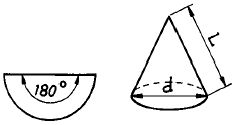
- L = 2d
- L = d
- L = πd / 2
- L = 2d / π
(정답률: 74%)
43. 다음 금속중 가장 비중이 큰 것은 ?
- Cu
- Au
- Pb
- Al
(정답률: 59%)
44. 일반용 냉간압연 강판의 KS표시 기호는 ?
- SBHG
- SPCC
- SHP
- SB41
(정답률: 89%)
45. 점 용접의 3대 요소가 아닌 것은 ?
- 용접전류
- 통전시간
- 유지시간
- 가압력
(정답률: 80%)
46. 국부가열에 의한 변형 교정시 연강재료의 가열온도는 약 몇 ℃인가 ?
- 300℃
- 500℃
- 700℃
- 1000℃
(정답률: 58%)
47. 금속에 외력이 작용했을 때 결정격자의 배열이 불규칙한 곳으로부터 이동이 생기는 것을 무엇이라고 하는가 ?
- 편석
- 쌍정
- 전위
- 슬립
(정답률: 44%)
48. 다음 용접 변형의 종류 중 설명이 잘못된 것은?
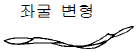
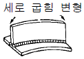
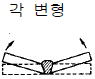
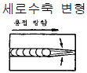
(정답률: 84%)
49. 다음 그림 중 회전 투상도는?
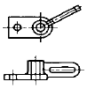
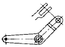
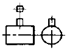
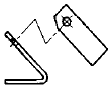
(정답률: 58%)
50. V형 굽힘에서 굽히기 위한 힘을 제거하면 그림과 같이 굽힘선이 휘어져서 만곡되는 현상을 무엇이라 하는가?
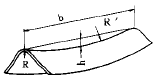
- 스프링 백(spring back)
- 워핑(warping)
- 블랭킹(blanking)
- 슬리팅(slitting)
(정답률: 67%)
51. 전단가공에서 전단기의 윗날과 아래날의 틈새(clearance)는 재료두께의 얼마정도로 하는가?
- 1/5 ∼1/10
- 1/10 ∼ 1/20
- 1/20 ∼ 1/30
- 1/30 ∼ 1/40
(정답률: 64%)
52. 설비의 구식화에 의한 열화는?
- 상대적 열화
- 경제적 열화
- 기술적 열화
- 절대적 열화
(정답률: 39%)
53. 그림과 같은 제품을 블랭킹(blanking)하는데 필요한 힘은 이론적으로 몇 kN 인가? (단, 소재의 전단강도 Ks = 30 N/mm2 이다.)
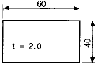
- 3
- 6
- 9
- 12
(정답률: 59%)
54. 냉간가공에 의하여 강도와 경도가 증가되는 현상은?
- 시효경화
- 표면경화
- 가공경화
- 침탄경화
(정답률: 50%)
55. TIG 용접에 관한 설명 중 틀린 것은?
- 직류정극성은 비드폭이 좁고 용입이 깊다.
- 알루미늄, 마그네슘 합금 등은 주로 직류 정극성을 사용한다.
- 아르곤, 헬륨 등의 불활성 가스를 사용한다.
- 용제(flux)를 사용하지 않으므로 슬래그 제거가 불필요하다.
(정답률: 57%)
56. 공급자에 대한 보호와 구입자에 대한 보증의 정도를 규정해 두고 공급자의 요구와 구입자의 요구 양쪽을 만족하도록 하는 샘플링 검사방식은?
- 규준형 샘플링 검사
- 조정형 샘플링 검사
- 선별형 샘플링 검사
- 연속생산형 샘플링 검사
(정답률: 34%)
57. 표는 어느 회사의 월별 판매실적을 나타낸 것이다. 5개월 이동평균법으로 6월의 수요를 예측하면?
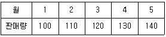
- 150
- 140
- 130
- 120
(정답률: 91%)
58. u 관리도의 공식으로 가장 올바른 것은?
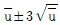
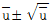
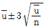
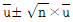
(정답률: 62%)
59. 도수분포표를 만드는 목적이 아닌 것은?
- 데이터의 흩어진 모양을 알고 싶을 때
- 많은 데이터로부터 평균치와 표준편차를 구할 때
- 원 데이터를 규격과 대조하고 싶을 때
- 결과나 문제점에 대한 계통적 특성치를 구할 때
(정답률: 17%)
60. 모든작업을 기본동작으로 분해하고 각 기본동작에 대하여 성질과 조건에 따라 정해놓은 시간치를 적용하여 정미시간을 산정하는 방법은?
- PTS법
- WS법
- 스톱워치법
- 실적기록법
(정답률: 64%)